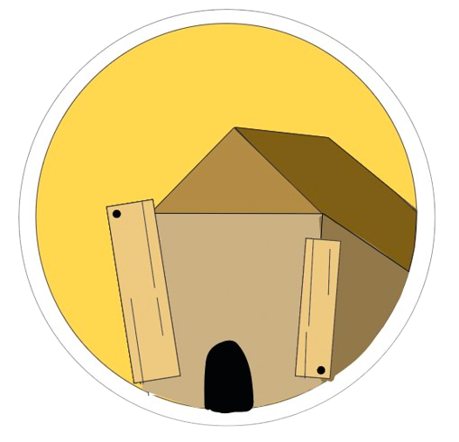
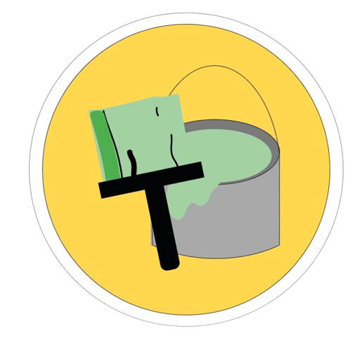
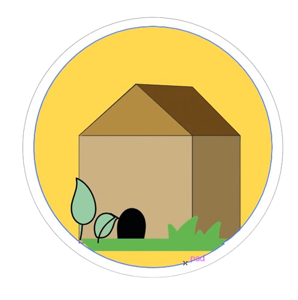

De opbouw
Oude loods
Het cafe Taverno is ontstaan uit een oude loods. Deze oude loods stond voor een lange tijd leeg en dit was dus een goede manier.
Renovatie
De lood stond dus leeg en daardoor hebben ze het gerenoveerd om er een cafe van te maken dat wel gebruikt gaat worden.
Resultaat
Nu ze het geronoveerd hebben wordt de oude loods weer gebruikt en kunnen mensen een drankje en wat eten, met op speciale dagen muziek.
Duurzaamheid
Waarom is dit
duurzaam?
Je zult nu wel de vraag hebben, waarom is dit duurzaam? Nou dat komt, omdat ze de plek
Ten eerste
is het duurzaam, omdat het gebouw niet gesloopt is. Dit is namelijk slecht voor het milieu, omdat bij het slopen van een gebouw er veel koolstofdioxide vrij komt.
Daarnaast
is het duurzaam, omdat er veel meubels, planken en nog andere dingen zijn blijven staan in de loods. Zo zijn de planken op het plafond hetzelfde gebleven en zijn de banken blijven staan. Dit is weer duurzaam, omdat er zo geen extra spullen en materialen gekocht hoeven te worden.